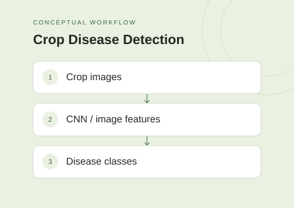

The idea
This project explores different approaches to crop disease image classification. Its experiment instructions cover a custom CNN alongside ResNet50 feature extraction paired with support vector machine and random forest classifiers.
Project scope
- Train and evaluate a custom convolutional neural network.
- Extract image features with ResNet50.
- Compare support vector machine and random forest classifiers.
- Use stratified cross-validation in the documented experiment workflow.
Technical approach
The comparison separates representation learning from classification: one approach learns through a custom CNN, while the feature-based approaches use extracted image representations with classical machine-learning models. The notebooks provide the experimental entry points.
Scope & limitations
This is an experimental classification project, not a validated field-deployment system. Accuracy and generalization claims are intentionally omitted until the datasets, splits, and reported results can be reproduced.